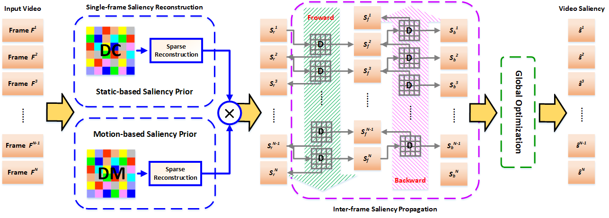

Video Saliency Detection via Sparsity-based Reconstruction and Propagation
Introduction:
-
Video saliency detection aims to continuously discover the motion-related salient objects from the video sequences. Since it needs to consider the spatial and temporal constraints jointly, video saliency detection is more challenging than image saliency detection. In this paper, we propose a new method to detect the salient objects in video based on sparse reconstruction and propagation. With the assistance of novel static and motion priors, a single-frame saliency model is firstly designed to represent the spatial saliency in each individual frame via the sparsity-based reconstruction. Then, through a progressive sparsity-based propagation, the sequential correspondence in the temporal space is captured to produce the inter-frame saliency map. Finally, these two maps are incorporated into a global optimization model to achieve spatiotemporal smoothness and global consistency of the salient object in the whole video. Experiments on three large-scale video saliency datasets demonstrate that the proposed method outperforms the state-of-the-art algorithms both qualitatively and quantitatively.

-
Runmin Cong, Jianjun Lei, Huazhu Fu, Fatih Porikli, Qingming Huang, and Chunping Hou, Video saliency detection via sparsity-based reconstruction and propagation, IEEE Transactions on Image Processing, vol. 28, no. 10, pp. 4819-4831, 2019. [PDF] [Demo]
-
The code is tested on Windows 10 64bit with MATLAB 2014a. If you use our code, please cite our papers. [Code and Results]